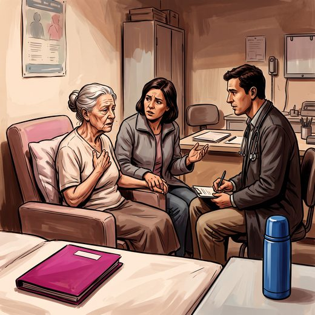

Ferramenta desta aula
SPICT — prognóstico. Roda no navegador, sem cadastro.
Consulta rápida à beira do leito
Condutas, doses e interações.
Referências da aula · 12
- World Health Organization. Palliative care [fact sheet]. Geneva: WHO. Disponível em: who.int.
- Murray SA, Kendall M, Boyd K, Sheikh A. Illness trajectories and palliative care. BMJ. 2005;330(7498):1007-11. PMID 15860828. doi:10.1136/bmj.330.7498.1007.PubMedDOI
- Lynn J, Adamson DM. Living well at the end of life: adapting health care to serious chronic illness in old age. Santa Monica: RAND Corporation; 2003.
- Temel JS, Greer JA, Muzikansky A, et al. Early palliative care for patients with metastatic non-small-cell lung cancer. N Engl J Med. 2010;363(8):733-42. PMID 20818875. doi:10.1056/NEJMoa1000678.PubMedDOI
- Sanders JJ, Temin S, Ghoshal A, et al. Palliative care for patients with cancer: ASCO guideline update. J Clin Oncol. 2024;42(19):2336-57. PMID 38748941. doi:10.1200/JCO.24.00542.PubMedDOI
- van der Steen JT, Radbruch L, Hertogh CM, et al. White paper defining optimal palliative care in older people with dementia: a Delphi study and recommendations from the European Association for Palliative Care. Palliat Med. 2014;28(3):197-209.
- Mitchell SL, Teno JM, Kiely DK, et al. The clinical course of advanced dementia. N Engl J Med. 2009;361(16):1529-38. PMID 19828530. doi:10.1056/NEJMoa0902234.PubMedDOI
- McDonagh TA, Metra M, Adamo M, et al. 2021 ESC guidelines for the diagnosis and treatment of acute and chronic heart failure. Eur Heart J. 2021;42(36):3599-726. PMID 34447992. doi:10.1093/eurheartj/ehab368.PubMedDOI
- Heidenreich PA, Bozkurt B, Aguilar D, et al. 2022 AHA/ACC/HFSA guideline for the management of heart failure. Circulation. 2022;145(18):e895-e1032. PMID 35363499. doi:10.1161/CIR.0000000000001063.PubMedDOI
- Davison SN, Levin A, Moss AH, et al. Executive summary of the KDIGO Controversies Conference on Supportive Care in CKD. Kidney Int. 2015;88(3):447-59. PMID 25923985. doi:10.1038/ki.2015.110.PubMedDOI
- Highet G, Crawford D, Murray SA, Boyd K. Development and evaluation of the Supportive and Palliative Care Indicators Tool (SPICT). BMJ Support Palliat Care. 2014;4(3):285-90. PMID 24644193. doi:10.1136/bmjspcare-2013-000488.PubMedDOI
- Radbruch L, De Lima L, Knaul F, et al. Redefining palliative care: a new consensus-based definition. J Pain Symptom Manage. 2020;60(4):754-64. PMID 32387576. doi:10.1016/j.jpainsymman.2020.04.027.PubMedDOI
Documentos oficiais
Leis e publicações do Ministério da Saúde sobre o cuidado da pessoa idosa, de acesso livre.
Abrir os documentos